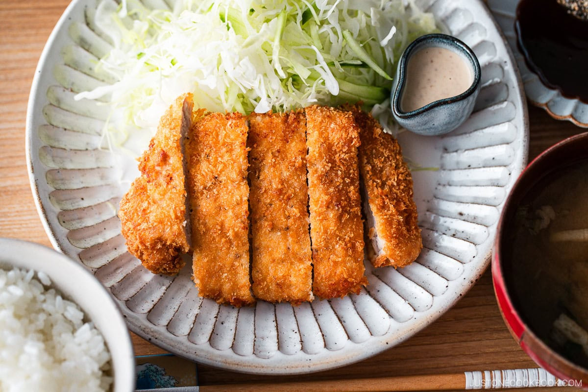

Tonkatsu
Made of a thick slice of pork, typically loin or tenderloin, that is coated in flour, egg, and panko (Japanese breadcrumbs), and then deep-fried until golden and crispy
30 min
Namiko Hirasawa Chen
Ingredients in this Tonkatsu Recipe
- Pork Loin or Pork Tenderloin Fillet: Contains a layer of fat for extra tenderness. Main protein for tonkatsu.
- Salt and Black Pepper: Season the pork for flavor.
- All-Purpose Flour: Used to coat pork before egg and panko.
- Large Eggs: Binds the panko to the pork.
- Panko Breadcrumbs: Provides a crispy coating for the fried pork.
- Neutral Oil (Vegetable Oil): For deep-frying the pork.
- Tonkatsu Sauce: Sweet-savory sauce for dipping.
- Black and White Sesame Seeds: Optional, for grinding into the dipping sauce.